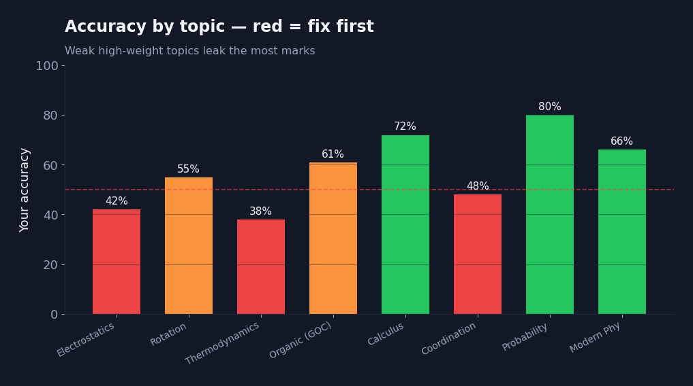
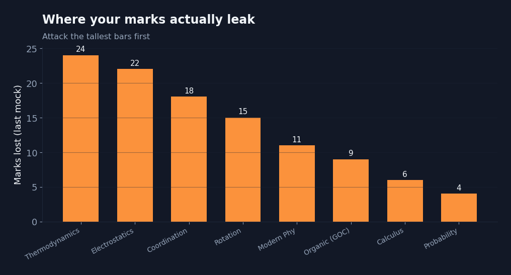
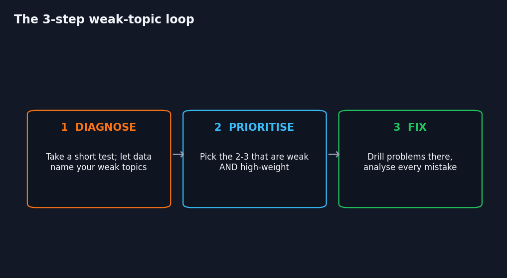

Ask most aspirants which topics are weak and they will name the ones they dislike, not the ones actually costing marks. Those are rarely the same. Fixing the wrong topics is how students study hard for months and barely move.
Feelings lie; data doesn't
You can only improve what you can measure. Take a mixed test, then look at accuracy per topic rather than one overall score. The picture is almost always surprising.

Notice how a topic you felt fine about can sit under 50% accuracy, while one you avoid is actually fine. That gap between feeling and data is where marks quietly leak.
Weak is not enough — weak AND high-weight
A weak topic that barely appears in the paper is a low priority. Convert accuracy into marks lost and the real targets jump out.

The loop that actually works

- Diagnose with a short mixed test instead of a self-assessment.
- Prioritise the 2–3 topics that are weak and high-weight.
- Fix them with problems, analysing every mistake — then re-test.
This is the entire idea behind Dakhilaa. Its free 15-minute diagnostic does the measuring for you — it names your weakest, highest-impact topics so your study hours finally point in the right direction.